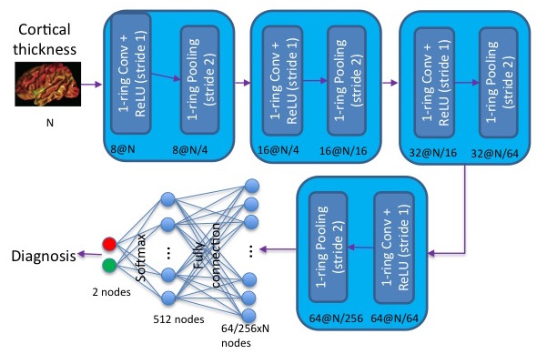

1. Vertex-based Convolutional Neural Networks
Download Toolbox
We developed a convolution neural network (CNN) on semi-regular triangulated meshes whose vertices have 6 neighbours. The key blocks of the proposed CNN, including convolution and down-sampling, are directly defined in a vertex domain. By exploiting the ordering property of semi-regular meshes, the convolution is defined on a vertex domain with strong motivation from the spatial definition of classic convolution. Moreover, the down-sampling of a semi-regular mesh embedded in a 3D Euclidean space can achieve a down-sampling rate of 4, 16, 64, etc.

This figure illustrates an example of the architecture of the proposed CNN on a semi-regular triangulated mesh. The four layers respectively include 8, 16, 32, and 64 filters. N represents the number of vertices on the input mesh.
Applications: We demonstrated the use of this vertex-based graph CNN for the classification of mild cognitive impairment (MCI) and Alzheimer's disease (AD) based on 3169 MRI scans of the Alzheimer's Disease Neuroimaging Initiative (ADNI). We showed that this vertex-based graph CNN outperfomed spectral graph CNN.
Reference
[1] Chaoqiang Liu, Hui Ji, Anqi Qiu, Convolutional Neural Network on Semi-Regular Triangulated Meshes and its Application to Brain Image Data.
2. Laplace-Beltrami Convolutional Neural Networks (LB-CNN)
Download Toolbox
We revisit spectral graph convolutional neural networks (graph-CNNs) given in Defferrard (2016) and develops the Laplace-Beltrami CNN (LB-CNN) by replacing the graph Laplacian with the LB operator. We then define spectral filters via the LB operator on a graph. We explore the feasibility of Chebyshev, Laguerre, and Hermite polynomials to approximate LB-based spectral filters and define an update of the LB operator for pooling in the LB-CNN. We employ the brain image data from Alzheimer's Disease Neuroimaging Initiative (ADNI) and demonstrate the use of the proposed LB-CNN. Based on the cortical thickness of the ADNI dataset, we showed that the LB-CNN didn't improve classification accuracy compared to the spectral graph-CNN. The three polynomials had a similar computational cost and showed comparable classification accuracy in the LB-CNN or spectral graph-CNN. Our findings suggest that even though the shapes of the three polynomials are different, deep learning architecture allows us to learn spectral filters such that the classification performance is not dependent on the type of the polynomials or the operators (graph Laplacian and LB operator).
Reference
[1] Shih-Gu Huang, Moo Chung, Anqi Qiu, Revisiting convolutional neural network on graphs with polynomial approximations of Laplace-Beltrami spectral filtering.